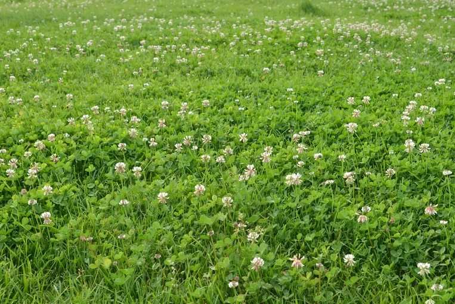
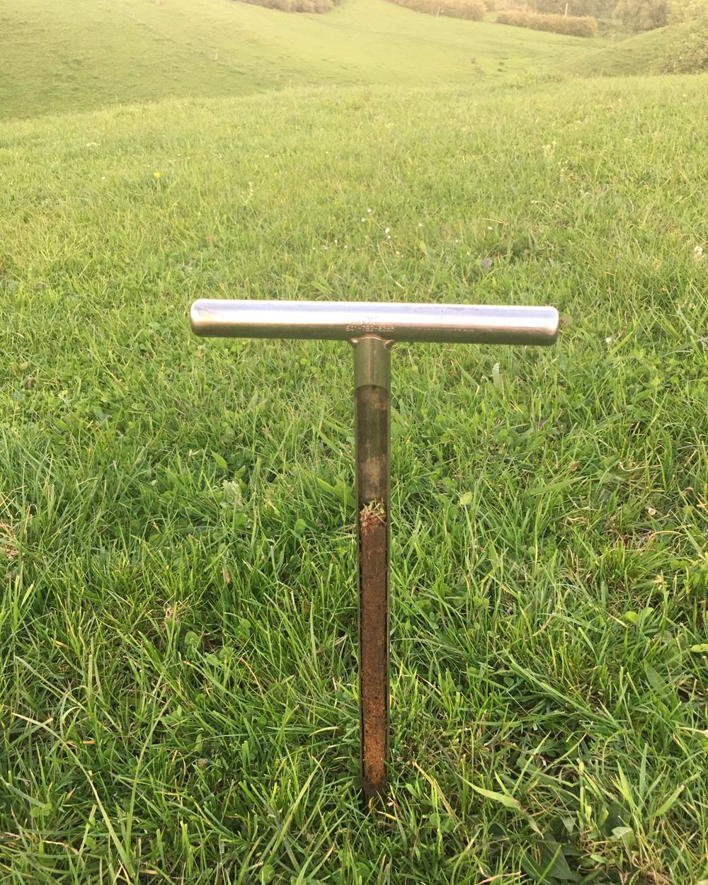
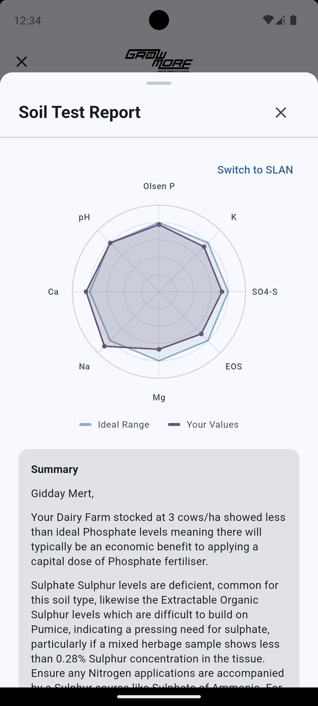

Put your soil test into the GrowMore Virtual Agronomist and you get a nutrient plan built on New Zealand soil science — then the cost of meeting it from every major supplier, side by side, delivered and spread.
No waiting on a rep. No one product range. A plan the minute your results land.

What pasture needs, and how it responds, has been well understood for a long time. The observations are described by maths, and computers are perfect at maths.
What has changed isn't the science. It's being able to apply it consistently and immediately, on your farm, without the delay that always sat between a soil test and a decision.
It won't save you from bad sampling. Garbage in, garbage out. But it will take a good test and turn it into a costed plan in minutes.

Our soils are geologically young, high in organic matter, naturally acidic, and commonly short of phosphorus and sulphur. Local research did the work of calibrating how much of each nutrient is needed for near-optimal pasture under our conditions, and how sulphur behaves across different soil types.
Under modern systems other nutrients turn limiting too — potassium under intensive dairying and increasingly on sedimentary drystock soils, and trace elements such as molybdenum drawn down over time.
The app carries those calibrations. It isn't a northern-hemisphere model with the units changed.

Every nutrient against its target band, in plain colour. A written summary of what your soil is doing. Then the blend that meets it, costed from each supplier both ex-store and on the ground — because cartage and spreading are charged per tonne, and that changes the order.
You see the whole market, not one catalogue.
GrowMore earns a commission when an order is placed, at the same flat rate from every participating supplier. That's what independence means here: no supplier can buy a better position.
Suppliers who don't participate still appear in your results. You just order from them yourself.
The app is free. There's no subscription and no paywall.
The long version, for anyone who wants it — on interpretation methods, on claims that don't hold up, and on what we'd accept as evidence.
The app also provides an alternative way of interpreting soil test results using the Base Cation Saturation Ratio (BCSR) approach.
This method focuses on the balance between the major cation nutrients — calcium, magnesium, potassium and sodium — relative to the soil's total exchange capacity. It is commonly referenced in some systems, particularly in turf and certain international agronomy circles, and is included here as an additional lens for understanding soil fertility rather than a replacement for conventional methods.
It should be clearly understood that, within this app, the BCSR approach applies only to the interpretation of cation nutrients and has no bearing on the calculation of phosphorus or sulphur requirements. In practice, its usefulness depends on the accuracy of soil test data and the conversion of laboratory results into consistent units such as kg/ha, alongside the target base saturation percentages often cited for these elements. It should also be understood that these conversions were based on the agronomy of crops with the soils they were grown in being frequently cultivated to a depth that became known as the "Acre Furrow Slice", the depth which a plough turned soils over with soils all being regarded as having similar bulk densities.
The approach also tends to favour maintaining trace elements at levels more consistent with "adequacy" rather than operating close to marginal or deficient levels.
The intent is to give farmers visibility across both approaches, allowing them to compare interpretations and make informed decisions within the context of their own system.
Beyond SLAN and BCSR, a number of alternative soil testing and interpretation philosophies exist. The most widely referenced of these is the Reams approach, along with a range of localised variants promoted in different regions. These systems often place emphasis on broader interpretations of soil condition, sometimes incorporating concepts such as "total" nutrient levels, soil energy, or biological indicators as primary drivers of fertility decisions.
GrowMore is not closed to the possibility of future advances in soil science. New ideas should always be considered where they are supported by sound methodology — that is, repeatable observation, measurement, and empirical validation. However, the standard applied is the same as any other area of applied science: claims must be testable, consistent, and demonstrably linked to production outcomes.
It is important to distinguish between what is measurable and relevant, and what is not. For example, reliance on "total" elemental tests does not reflect plant-available nutrients and can be misleading in a fertiliser decision context. Measuring total phosphorus in a soil is not materially useful when plants respond to the fraction that is available. In effect, this is closer to a mining assay than a soil test.
Similarly, broader claims around soils being "electric" or governed primarily by loosely defined biological or carbon-based frameworks should be treated with caution. While soil chemistry, physics, and biology are all important, they must ultimately be grounded in measurable effects on plant growth and farm performance. Concepts such as building soil carbon or promoting biological activity may have merit in certain contexts, but they are not, in themselves, prerequisites for running a productive and profitable farming system.
In some cases, the practical application of these approaches extends to the sale of materials such as sands, clays, or rock dusts, often attributed with broad or poorly defined properties such as silicon supply or paramagnetism. In other cases, suppliers may be unwilling or unable to provide a clear nutrient analysis of what is being applied, instead suggesting that outcomes are driven less by nutrient quantity and more by forms of "biological activation." These claims require the same level of scrutiny as any other input — namely, whether they deliver consistent, measurable improvements in production.
A practical test of any system is the outcomes it produces. Farmers should be able to ask: how many operations using this approach are consistently performing at the top end of production for their environment? How many have sustained those results over time? These are the measures that matter — not the claims, but the results.
Nitrogen fertiliser has become a powerful tool for filling short-term feed deficits, and it has driven significant gains in production. But it comes with environmental constraints and is not a complete solution on its own.
Farmers have long understood that if you don't put back in what you take out, the earth quickly defeats you — whether those nutrients are refined fertilisers or organically sourced makes scant difference.
The intent of the platform is to operate within this framework of measurable, repeatable agronomy. It is not designed to promote or dismiss alternative viewpoints outright, but to provide a consistent and transparent application of methods that are well understood and demonstrably linked to production.
Where new approaches — including those based on biological activation, alternative materials, or emerging interpretations — can meet that same standard, grounded in evidence, repeatability, and real-world outcomes, they remain open for consideration.
It is a tool for applying known science more efficiently, not reinventing it.
Walk through the app screen by screen, or download it and put your own soil test in.